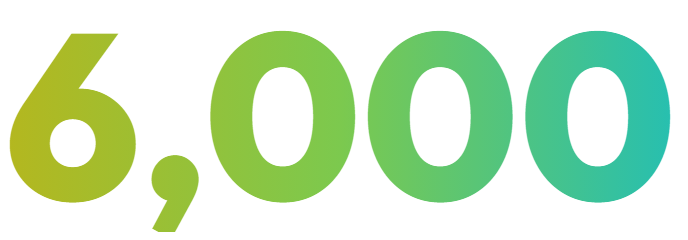
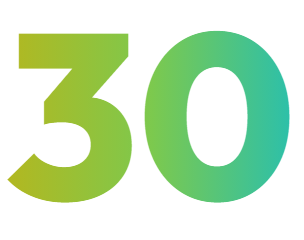
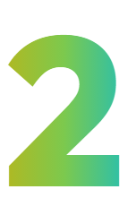

オンプレミス生成AI基盤
機密データを扱う 自治体・製造・建設・医療へ
データは
外に出せない。
それでも、
生成AIを現場に。
GBase On-premises は、外部ネットワークに接続せず、社内・庁内の閉域環境だけで動く生成AI基盤です。日本語特化LLMとRAGで、機密文書をそのまま業務に活かせます。
業種別の課題
現場の“困りごと”を、閉域のAIが支援します
困りごと審査・議事録が属人化。部内説明の繰り返し。機微情報でクラウド不可。
AIの支援- 審査観点で一次チェック
- 企画案・概説書を起草
- 議事録を自動作成
困りごと設計資料・技術文書を外に出せず、仕様書検索に時間。ノウハウが属人化。
AIの支援- 過去図面・仕様を即検索
- 成績書の不備をチェック
- 規程・根拠を出典付きで確認
困りごと図面・積算・規程の確認が人手頼み。入札・設計情報の機密性が高い。
AIの支援- 積算・入札書類の不備を確認
- 図面の仕様・整合をレビュー
- 現場会議の議事録を自動作成
困りごとカルテ・申請書類の確認に人手不足。個人情報でクラウドAIが使えない。
AIの支援- 薬剤の質問に添付文書で回答
- 書類の記載不備をチェック
- 診療記録を検索・要約
独自技術
ハイブリッド量子化 × Agentic RAG
GPU使用量
最大75%削減
少ないGPUで、
全社員・全職員の利用に対応
推論速度
最大3倍に高速化
閉域環境でも、
待たせない応答
Agentic RAG出典付き回答
AIが検索計画を立て、検証しながら回答
1質問を分解曖昧な質問も論点ごとに
2複数回検索複数文書を横断
3検証・再検索足りなければ自律的に
4統合して回答根拠の出典を明示
日本語特化LLM「GBase-gemma-4-31B-it」ほか 2モデル体制／表・画像・図面にも対応
※ GPU使用量・推論速度の削減効果は、Sparticle による自社検証環境での測定値です。対象モデル・ハードウェア構成・利用条件により数値は異なります。
オンプレミス生成AI基盤
主な機能
探す・読む・記録する、そして業務を「回す」
文書・図面検索RAG ＋ VLM
- 社内文書・図面を横断して検索
- 表・画像・図面まで理解
- 回答に根拠の出典を表示
書類チェックAI-OCR
- PDFをアップロードするだけで不備を検出
- 指摘箇所を枠で表示、理由と修正例も
- チェックルールの整備はSparticleが実施
AI議事録ローカルLLMで庁内・社内完結
- 話者・時刻付きで自動文字起こし
- 概要・決定事項・ToDoを自動要約
- 会議データを外に出さない
業務エージェント
特殊フォーマットのファイル変換や前処理ツールをここから起動できます。
AI プレゼンテーションアウトラインの承認工程を経て、プレゼンテーションを設計・確認・制作
音声文字起こし音声ファイルをアップロードし、タイムスタンプ・話者ラベル付きのテキストに
事業立案事業の方向性と関係資料をもとに事業立案を支援します。
業務特化エージェント説明するだけで自律実行
- 4つのエージェントを1つの画面から起動
- 起草→根拠→審査を段階的に支援
- Dify連携でノーコード自動化も
導入事例
導入した現場では、こう変わりました
自治体（県庁）
全職員を対象に本番運用
約
名
- 問い合わせ対応 約70%削減
- 公文書・申請書類の作成を支援
- 個人情報は3段階で匿名化
製造業（産業機械メーカー）
技術情報の検索時間

分 → 
分
- 社内規程の検索 20分→1分
- 情報漏洩リスク 0件
- 利用部門の満足度 9/10
数値は各導入先での結果です。効果はご利用環境・運用体制により異なります。
実機デモ・無料相談
gbase.ai/onprem
実データでトライアル業種別ユースケース相談BMT・導入コスト試算ハードウェア構成のご提案
Sparticle株式会社
〒103-0001 東京都中央区日本橋小伝馬町6-12 日本橋森ビル 3F
https://www.sparticle.com/
TEL 03-3527-2828（AI 自動応答 試験運用中）
※ 記載の会社名・製品名は各社の商標または登録商標です。